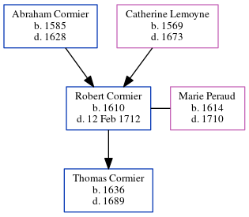

Robert Cormier 1610 - 1712
[ Home ] | [ Calendar ] | [ Surnames Index ] | [ Census Index ] | [ Family History ]The child of Abraham Cormier and Catherine Lemoyne, Robert Cormier, the 10 times great-grandfather of Michele Copp (née Phillips), was born in La Rochelle, Manche, Basse-Normandie, France in 16101 and married Marie Peraud (with whom he had 1 child, Thomas) in 16341.
He died on Feb 12, 1712 in Port Royal, , New Brunswick, Canada.
Parents
- Abraham was born in 1585
- Catherine was born in 1569
Children
- Thomas was born in 1636
Citations
- U.S. and International Marriage Records, 1560-1900 Online publication - Provo, UT, USA: The Generations Network, Inc., 2004.Original data - This unique collection of records was extracted from a variety of sources including family group sheets and electronic databases. Originally, the information was deriv
Family Tree
Generated by ged2site. Last updated on Jun 6, 2024